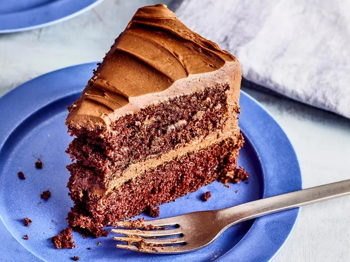

Back to Homepage
Chocolate Cake Recipe

Description
This chocolate cake is rich, moist, and perfect for any occasion. It's made with cocoa powder and topped with a creamy chocolate frosting.
Ingredients
- 1 and 3/4 cups all-purpose flour
- 3/4 cup unsweetened cocoa powder
- 2 cups granulated sugar
- 1 and 1/2 teaspoons baking powder
- 1 and 1/2 teaspoons baking soda
- 1 teaspoon salt
- 2 large eggs
- 1 cup whole milk
- 1/2 cup vegetable oil
- 2 teaspoons vanilla extract
- 1 cup boiling water
- For frosting: 1/2 cup unsalted butter, 2/3 cup unsweetened cocoa powder, 3 cups powdered sugar, 1/3 cup milk, 1 teaspoon vanilla extract
Instructions
- Preheat the oven to 350°F (175°C). Grease and flour two 9-inch round cake pans.
- In a large bowl, combine flour, cocoa powder, sugar, baking powder, baking soda, and salt.
- Add eggs, milk, oil, and vanilla extract to the dry ingredients. Beat on medium speed for 2 minutes.
- Stir in boiling water (the batter will be thin).
- Pour the batter evenly into the prepared cake pans.
- Bake for 30-35 minutes or until a toothpick inserted in the center comes out clean.
- Let the cakes cool in the pans for 10 minutes, then remove from pans and cool completely on wire racks.
- For the frosting, beat butter until creamy. Gradually add cocoa powder and powdered sugar, alternating with milk. Mix until smooth and creamy.
- Spread frosting between the cooled cake layers and on top of the cake. Decorate as desired.
- Slice and enjoy your delicious chocolate cake!